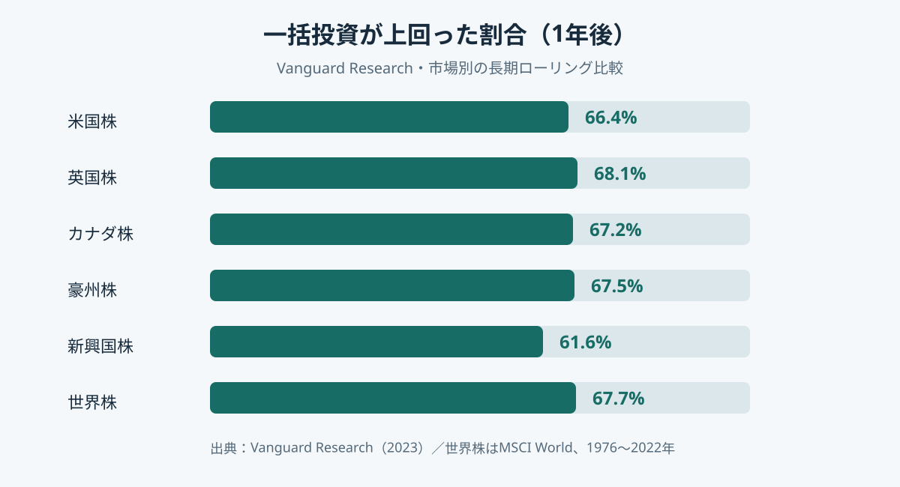
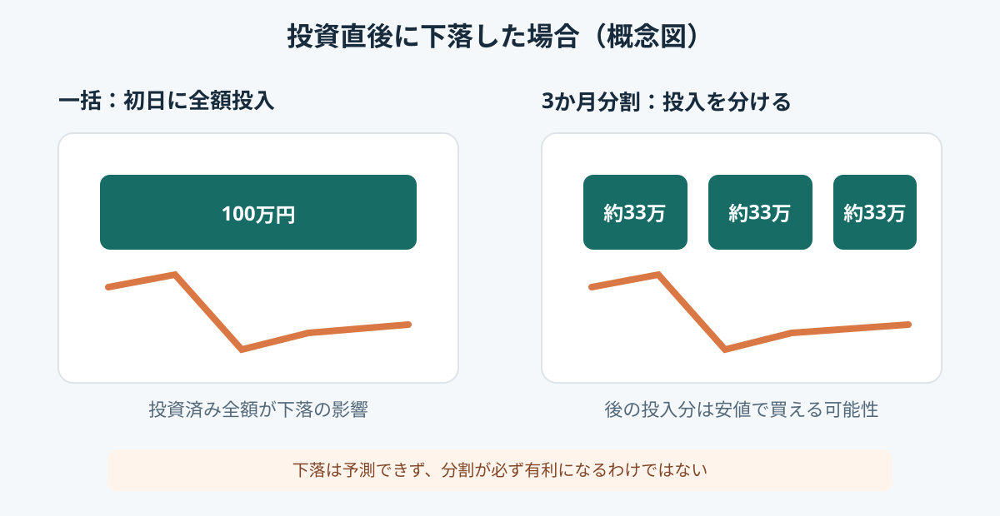

カテゴリツリーを開く
投資の基礎 / 資産形成
一括投資と積立投資はどちらが有利？長期実績・数字・暴落時の違いで比較
まとまったお金が手元にあるとき、今すぐ投資するか、何回かに分けるか。長期実績では一括投資が有利になりやすい一方、投資直後の下落では分割投入が上回ることもあります。
データ確認日：2026年11月2日
1. 比較する「一括」と「積立」
ここでの一括投資は、すでに手元にあるまとまった資金をすぐ全額投資する方法。分割投入は同じ資金を数か月に分けて市場へ投入する方法です。
| 比較 | 一括 | 分割投入 |
|---|---|---|
| 投資開始 | すぐ全額 | 一部を現金で待機 |
| 市場にいる時間 | 長い | 待機分は短い |
| 上昇相場 | 全額が上昇に参加 | 待機分は参加できない |
| 直後の下落 | 全額が値下がり | 後の資金は安値で買える可能性 |
毎月の給与から投資する場合、将来受け取る収入を前倒しして一括投資することはできません。以下は「同額の資金が最初から存在する」条件です。
2. 1976～2022年の長期実績
Vanguard Researchの研究「Cost averaging: Invest now or temporarily hold your cash?」は、株式市場の過去データを使い、一括投資と3か月分割投入を比較。世界株はMSCI World Indexの1976～2022年データを用い、開始月をずらした1年間の比較を繰り返しています。

| 市場・指数 | 対象期間 | 一括が上回った割合 |
|---|---|---|
| 米国株 Russell 3000 | 1979～2022 | 66.4% |
| 英国株 FTSE All-Share | 1986～2022 | 68.1% |
| カナダ株 S&P/TSX | 1985～2022 | 67.2% |
| 豪州株 S&P/ASX 300 | 1992～2022 | 67.5% |
| 新興国株 MSCI EM | 1988～2022 | 61.6% |
| 世界株 MSCI World | 1976～2022 | 67.7% |
世界株では約68％の開始期間で一括投資が上回り、反対に約32％では分割投入が上回りました。「一括なら必ず勝つ」という意味ではありません。
3. ポートフォリオ別に見る最終資産額の差
ここで比較しているのは、投資対象の商品名ではなく、株式と債券をどの割合で組み合わせたかというポートフォリオ（資産配分）別の結果です。同じ10万米ドルを最初から用意し、同じ資産配分で運用した場合について、一括投資と3か月の分割投入を比べています。
Vanguardの研究では、1976～2022年のMSCI World Index（世界株式）とBloomberg U.S. Aggregate Bond Index（米国債券）を使い、1年間のローリング期間ごとの結果を集計しています。下表は、その最終資産額の中央値（50パーセンタイル）です。
| ポートフォリオ（資産配分） | 一括投資 | 3か月の分割投入 | 差額（一括−分割） | 差額率 |
|---|---|---|---|---|
| 株式100％ | 111,940ドル | 109,580ドル | ＋2,360ドル | ＋2.15％ |
| 株式60％・債券40％ | 109,360ドル | 107,453ドル | ＋1,907ドル | ＋1.77％ |
| 株式40％・債券60％ | 107,648ドル | 106,400ドル | ＋1,248ドル | ＋1.17％ |
差額率は「（一括投資の最終額 ÷ 分割投入の最終額 − 1）×100」で計算しています。つまり、分割投入の最終額を基準に、一括投資が何％上回ったかを示します。Vanguardの公表値では、それぞれ約2.2％、1.8％、1.2％です。
株式100％では差額が2,360ドル、差額率は約2.15％でした。株式60％・債券40％では約1.77％、株式40％・債券60％では約1.17％です。株式の割合が高いポートフォリオほど、投資を待つ間に株式のリスクプレミアムを得られない影響が大きくなり、一括投資の中央値が上回る幅も大きくなる傾向が見られます。
中央値だけでなく、良い結果・悪い結果も比べる
中央値は結果の真ん中を示す値です。実際の差の出方を知るには、好調だったケースと厳しかったケースも見る必要があります。株式100％のポートフォリオについて、同じ研究の上位・下位の結果を抜き出すと次のとおりです。
| 結果の位置 | 一括投資 | 3か月分割 | 差額（一括−分割） |
|---|---|---|---|
| 上位5％（95パーセンタイル） | 139,453ドル | 131,012ドル | ＋8,441ドル |
| 上位25％の境目（75パーセンタイル） | 119,063ドル | 116,286ドル | ＋2,777ドル |
| 中央値（50パーセンタイル） | 111,940ドル | 109,580ドル | ＋2,360ドル |
| 下位25％の境目（25パーセンタイル） | 102,070ドル | 101,531ドル | ＋539ドル |
| 下位5％（5パーセンタイル） | 82,947ドル | 85,906ドル | −2,959ドル |
上位5％では一括投資のほうが大きく増えましたが、下位5％では分割投入のほうが2,959ドル多く残りました。分割投入は投資初期に市場へ入れていない資金があるため、直後に大きく下落したケースでは損失を抑えやすくなります。一方、上昇が続くケースでは、待機資金が値上がりに参加できず差が広がります。
25パーセンタイルでは一括投資が539ドル上回っています。Vanguardの分析では、25パーセンタイルから上の範囲では一括投資が上回り、それより厳しい下位側では分割投入が上回る結果でした。つまり、分割投入が有利になるのは主に市場環境が厳しかったケースです。「一括が約3分の2の期間で勝った」という勝率と、「下落が厳しい局面では分割が有利になり得る」という結果は、同時に成り立ちます。
金額は研究と同じ米ドル建てです。円換算の実績でも、特定の投資信託やETFの成績でもありません。比較対象は指数を使った過去の集計で、税金・商品固有の費用・為替の影響を反映した個人の運用結果ではありません。
4. 分割期間を長くするとどうなる？
分割投入は、何回に分けるかによっても結果が変わります。投資を完了するまでの期間が長いほど、現金で待機する部分が増え、市場の値上がりに参加できない時間も長くなります。そのため、過去データでは分割期間を長くするほど、一括投資に対する機会費用が大きくなる傾向が確認されています。
Vanguardの国際比較では、世界株式（米ドル）の場合、一括投資が分割投入を上回った割合は3か月分割で67.7％、6か月分割で72.6％でした。米国株式では3か月分割66.4％、6か月分割73.7％です。分割期間が長くなるほど一括投資が上回る割合は高まりました。ただし、これは1年間のローリング比較であり、どの開始時点でも一括が有利という意味ではありません。
| 市場 | 3か月分割 | 6か月分割 |
|---|---|---|
| 米国株式 | 66.4％ | 73.7％ |
| 世界株式（米ドル） | 67.7％ | 72.6％ |
| 英国株式 | 68.1％ | 69.5％ |
| 新興国株式 | 61.6％ | 61.8％ |
シミュレーションで見る3か月と6か月
同じ研究では、過去の実績だけでなく、1万通りのリターンシナリオを使ったシミュレーションも行っています。株式60％・債券40％のポートフォリオに10万ドルを投じる設定では、1年後の中央値で、一括投資に比べて3か月分割は504ドル、6か月分割は1,491ドル少ない結果でした。
この数字は過去の実績表とは別の、モデルによるシミュレーション結果です。将来の予測値ではありませんが、分割期間を長くすると待機資金の機会費用が大きくなり得ることを示しています。
待機資金に利息が付く場合
分割投入中の現金を無利息で置く場合と、利息を受け取れる場合では結果が変わります。Vanguardは待機資金に米国の3か月物国債利回りを反映した分析も行い、その場合でも株式100％では一括投資が3か月分割を上回った割合は65％でした。現金金利が高いほど一括投資の優位性は小さくなりますが、待機資金の利息だけで常に差が埋まるわけではありません。
日本で実際に分割投入する場合は、預金金利、投資する商品の値動き、為替、税金、売買コストなど条件が異なります。米国の研究結果をそのまま日本円の運用額に置き換えず、仕組みと傾向を理解するための参考として使いましょう。
5. 投資直後に下落した場合
一括投資が平均的に優位になりやすいのは、株式市場が長期的に上昇する局面を多く含み、早く投資した資金ほど上昇に参加する時間が長いからです。反対に投資直後に大きく下落すると、一括投資は資金全体が影響を受けます。

ただし、下落が来るとは限りません。上昇が続けば待機資金は取り残されます。分割投入も損失をなくす方法ではなく、投資を終えた後に下落すれば全額が影響を受けます。
6. 給与からの積立は別の話
毎月の給与から投資する場合、まだ受け取っていない将来の収入を一括投資できません。収入を受け取るたびに投資する積立は、資金が用意できる時点で市場に参加する方法です。「一括が有利だから、給与を貯めてから投資するべき」と考える必要はありません。
7. どう判断すればよいか
| 状況 | 考え方 |
|---|---|
| まとまった資金があり期待リターン重視 | 一括は市場にいる時間が長く、過去実績では優位になりやすい |
| 投資直後の下落が不安 | 短期間の分割で心理的負担を抑える選択肢。ただし機会損失も理解する |
| 給与から毎月投資 | 収入を受け取った時点で無理のない額を積み立てる |
| 生活資金・近い将来の資金も含む | 先に投資に回せる資金を分ける |
分割するなら、期間・回数・金額を先に決め、相場のニュースを見て都度変更しない方法が考えられます。期間が長いほど、待機資金が市場に参加しない時間も長くなります。
判断するときの順番
- 投資に回せる資金を確定する：生活防衛資金や近い将来に使う予定のお金を除き、値下がりしても生活に支障が出ない範囲を決めます。
- 先にポートフォリオを決める：株式と債券などの資産配分は、投資期間・目的・値下がりへの耐性に合わせて考えます。一括か分割かを理由に、必要以上に株式比率を上げたり下げたりしないようにします。
- 投入方法を選ぶ：期待リターンと市場にいる時間を重視するなら一括投入が基本的な比較対象です。投資直後の下落で計画を中断してしまいそうな場合は、機会費用を理解したうえで短期間の分割投入を選ぶ余地があります。
- 分割の終了日を決める：分割を選んだ場合は、回数・金額・最終投入日をあらかじめ決めます。相場が回復するまで、あるいは下がるまでといった条件にすると、投資開始を先延ばしし続ける可能性があります。
一括投資の期待値が高くても、直後の下落に耐えられず売却してしまえば、計画どおりの運用はできません。反対に、分割投入を選んでも、決めた期間を過ぎて現金のまま保有し続けると、分割による調整ではなく投資の先送りになります。数字上の優位性だけでなく、自分が実行し続けられる方法かを考えます。
まとめ
- 1976～2022年のVanguard研究では、世界株の1年比較で一括投資が上回った割合は67.7％。
- 株式100％では、一括投資が3か月分割より中央値で2,360ドル・約2.15％上回った。株式60/40は約1.77％、40/60は約1.17％。
- 下位5％の厳しいケースでは、株式100％でも分割投入のほうが2,959ドル多く残った。
- 分割期間が長いほど待機資金の機会費用が増える傾向があり、シミュレーションでは6か月分割の中央値の差が3か月分割より大きかった。
- 一括は市場にいる時間が長い反面、直後の下落を全額受ける。
- 分割は下落直後に有利な可能性があるが、上昇時には待機資金の機会損失が生じる。
- 手元資金の分割投入と給与からの積立は区別する。
参考資料
- Vanguard Research, Cost averaging: Invest now or temporarily hold your cash? (2023) — 1976～2022年等の市場データ、比較条件、勝率・資産額。
- Vanguard UK Professional, The truth about cost averaging — 研究結果の要約。
- 金融庁「資産形成の基本」 — 長期・積立・分散の考え方。
※過去の市場データは将来の結果を保証しません。指数は実際に購入できる商品そのものではなく、税・費用・為替・商品設計により結果は異なります。